Vespucci. Now on macOS Monterey
Published on October 26, 2021
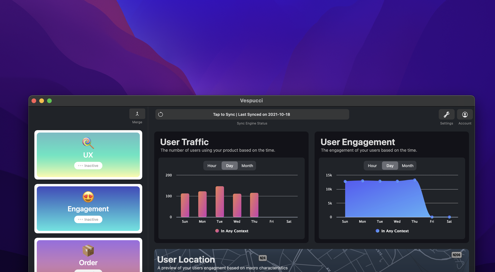We are very excited to announce the release of Vespucci 1.9.1 which brings the support of macOS Monterey. Vespucci 1.9.1 is available today.
Merge stories & create funnels.
Published on October 18, 2021
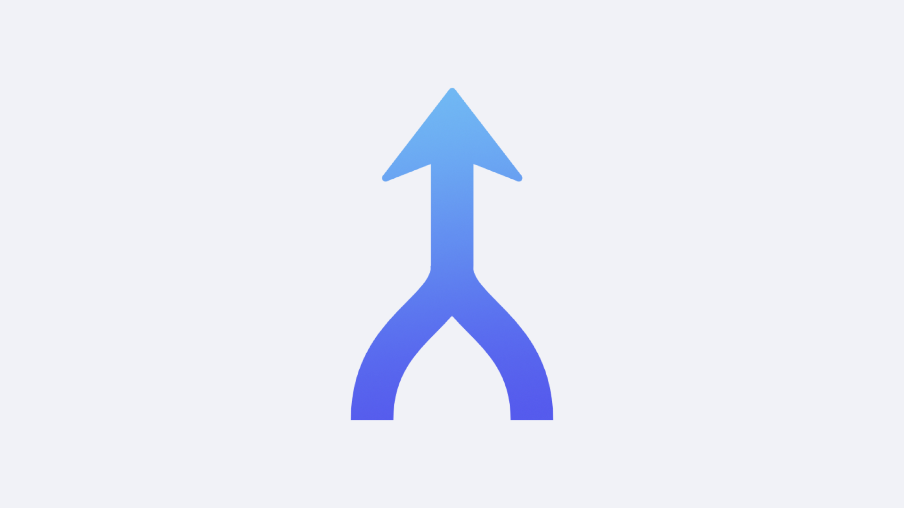Today we are super excited to announce that it is now possible to combine multiple stories in Vespucci. Imagine you write a story based on engagement that measures the time spent on your product. You can now combine it with a story based on an action, for example. The combination is done with a few clicks, you select the two stories and then specify a logical operator to connect them. You can decide to create a story that combines two others using the "And" operator or the "Or" operator. You can also exclude a scenario with the "Not" operator.

Finally, and this is probably the feature we are most excited about, if you combine two stories based on a user journey you can now create funnels. You can specify, through a visual drag and drop interface, which story should take place before the other.
The combination of stories is a feature of Vespucci 1.9. Vespucci 1.9 is available today.
Introducing our biggest update yet.
Published on September 24, 2021
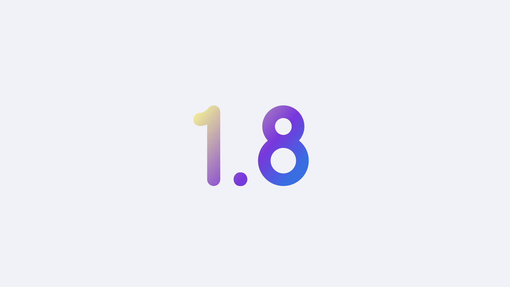We are super excited to deliver a sneak peek of the next major release of Vespucci. Vespucci 1.8 is the synthesis of the feedback we have accumulated throughout the summer. It is the most important update of Vespucci yet with more than 50 new features. Here are the main ones.
Until now, the Story Editor was focused on information capture. The idea was to describe how you create value within your products. However, many users told us that visualising the behaviour described in the story was not easy. They wanted to be able to see, at a glance, where, when and for which category of users it occurred.

That's why we're introducing a redesigned Story Editor. We've drastically simplified it so you can focus on describing what creates value for you. The Story Editor now integrates a brand new dashboard built around interactive cards that allow you to explore at a glance how the behaviour you described is materialising.
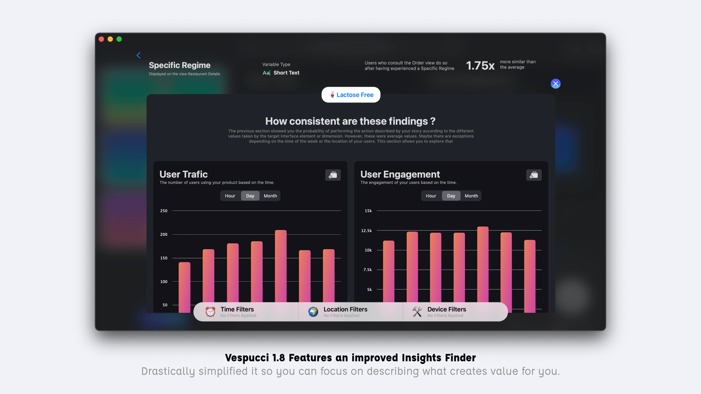
We've redesigned the way Vespucci helps you uncover the unexpected drivers of your users' actions. A single view now allows you to identify at a glance how your content shapes your users' experience. We also introduced new segmentation tools.
Vespucci 1.8 contains dozens of improvements and refinements. The reliability of the sync system has been improved, the story editor is easier to use and more. Vespucci 1.8 will be available next week.
Improved Engagement based Stories.
Published on August 12, 2021
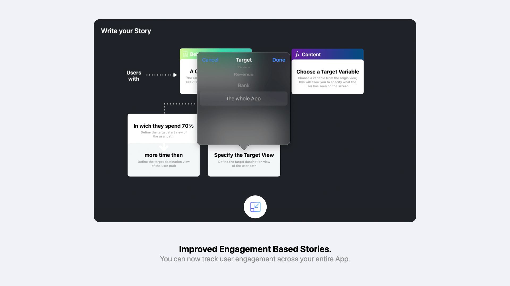About 10 days ago, we introduced the ability to write stories based on the level of engagement of your users. Today we're bringing new improvements to this family of stories. You can now track your users' engagement not only through specific views but through your entire app. These improvements are available through Vespucci 1.7.1, available today.
A new way to set up Vespucci on your Mac.
Published on July 29, 2021
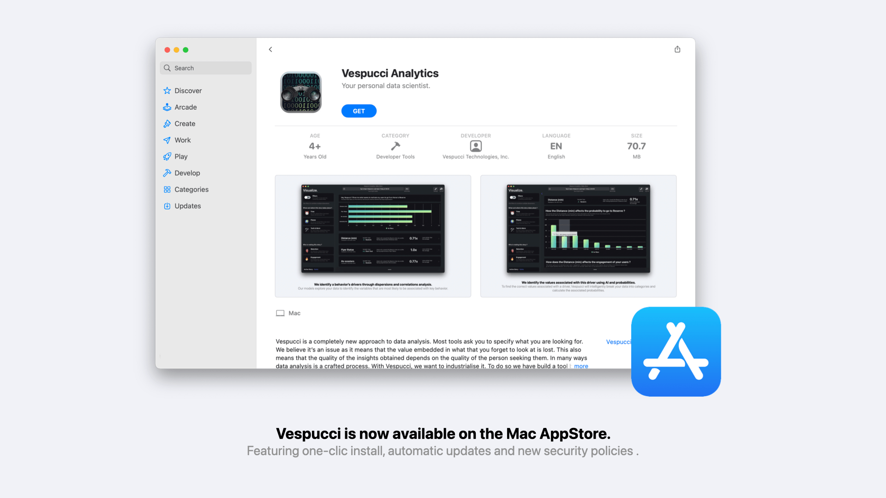Vespucci is a native app that you have to install on your Mac. It's an approach that helps us deliver the ultimate user experience. It allows us to push your Mac to its limits. For example, we rely on its GPU (graphics system) to accelerate operations involving parallel computing. To do this we rely on Metal, the same technology used in professional solutions such as Adobe Premiere or Final Cut Pro. Another example, on compatible systems, we use the neural engine to accelerate operations involving artificial intelligence.
Not everything would have been possible if Vespucci was a website like most other data analysis solutions. However, even if it is a relatively familiar act that you are used to having to do it with programs such as Slack, Zoom and many others, we are aware that installing software on your Mac is a potential source of friction. That's the reason why we're announcing today a new way to download Vespucci and keep it up-to-date: the Mac AppStore. The Mac AppStore allows you to install Vespucci with a single click and keep it automatically updated. But that's probably not the most important thing. The security preferences of macOS have two levels. The first level, the most demanding, does not allow the installation of applications outside the AppStore. With the availability of Vespucci, in the AppStore we allow some of our users to install Vespucci without having to change their security settings.
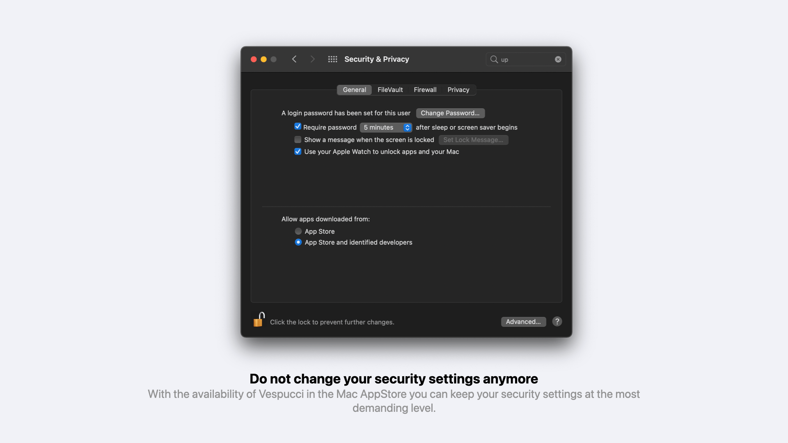Vespucci is available from today on the Mac App Store.
Introducing Engagement 🔥 based Stories.
Published on July 23, 2021
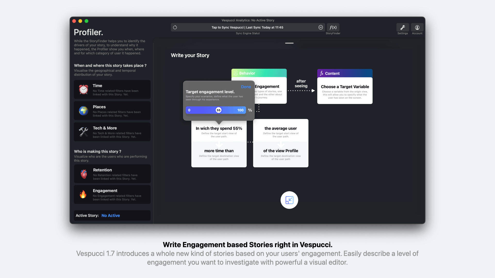We are excited to announce a new family of stories available now in Vespucci. In addition to user journey and action based stories we are introducing engagement based stories. These will allow you to investigate scenarios such as your users spending 50% more time than average on a particular view and much more, the editor being very modular. As a reminder, a Story consists of a visual editor that allows you to describe a valuable behavior to the computer. After describing the behavior, Vespucci will identify the drivers of this behavior through the StoryFinder a powerful statistical tool. Engagement based Stories are available today in Vespucci as part of the 1.7 Update.
Here is Vespucci 1.6.1 and 1.6.2.
Published on July 10, 2021
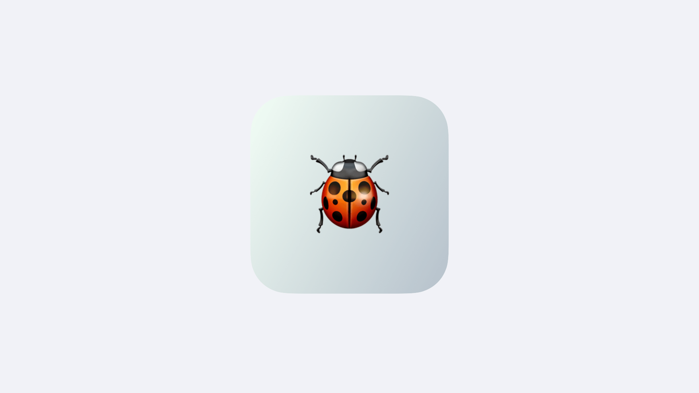We have spent the last few weeks refining the Vespucci experience. Thus Vespucci 1.6.1 and Vespucci 1.6.2 do not contain any visible novelties but introduce refinements in the graphical interface as well as in their general functioning. Moreover, we will soon expand our team, which has led us to restructure part of the Vespucci code.
Track dimensions in the StoryFinder.
Published on June 22, 2021
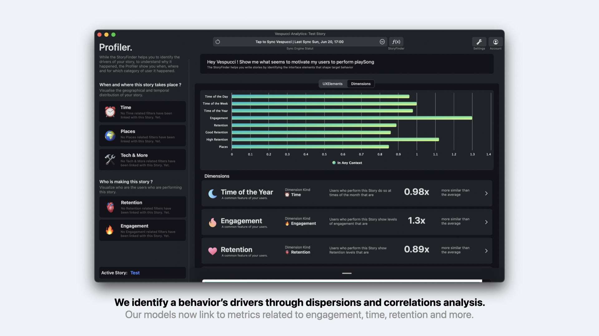Until today, Vespucci was built around your content. We really designed Vespucci as a scalable alternative to solutions such as Hotjar or FullStory, namely a powerful way to understand how the content your users experience shapes their experience. So our statistical models show you how a given interface element (let's say a price, a delivery time,...) affects a target behaviour (completing or abandoning an order in your app). Today we want to go further than content. There are other elements that can shape the experience of your users. That's why Vespucci 1.6 introduces dimension support in the StoryFinder. You can now determine whether elements such as the time of day, the level of engagement of your users or their locations are likely to transform their behaviour. In addition, we have revised the algorithms related to probabilistic calculations to present you with more readable results in the StoryFinder.
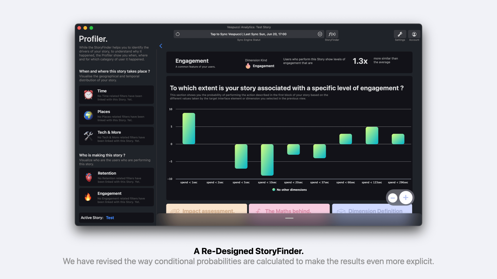
Finally, we have greatly improved the management of multi-windowing, it is now much easier to compare two dimensions side by side. Vespucci 1.6 featuring the new StoryFinder is available today as part of the preview program.
Introducing the DataStudio.
Published on June 17, 2021
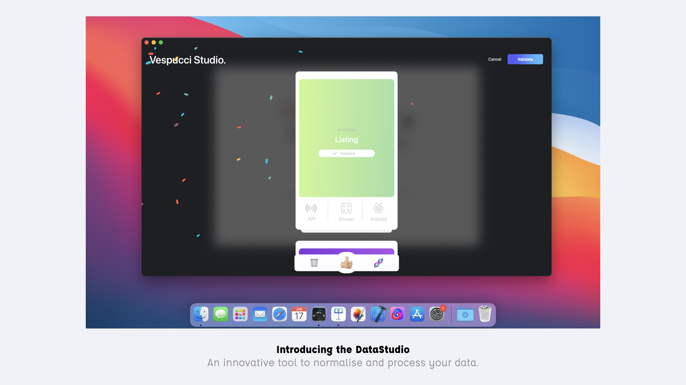About ten days ago, we released Vespucci 1.4 with Segment support. Segment is very popular in the industry because it allows to "normalize" data. This normalisation is achieved by the fact that all the data you collect through Segment can be conceptually summarised into three things; either an action, a view or an identity. This approach is very powerful because it provides a layer of abstraction that allows, for example, the design of models and tools without prior knowledge of the dataset to be analysed.
Nevertheless, Segment also has its limitations. For example, it is not uncommon for Segment users to opt for the default behaviour of automatically tracking all views. Such behaviour has two corollaries.
- On the one hand, automatic tracking implies the collection of undesirable elements. For example, the display of an alert. Let's imagine that a user consults view A. Then, a popup indicating a low battery appears on the screen, the user makes the popup disappear. Segment tracking is as follows: view A> popup> view A. So three views have been tracked where conceptually there is only one. That's an issue for things like user's engagement measurement.
- On the other hand, the automatically tracked views do not include properties. However, it is likely that a Segment user will want to add properties to views. To do this, a new view track must be created. This results in two tracks for the same view.
To address some of these limitations and more, we are introducing the DataStudio. The DataStudio is an innovative interface that allows our users to prepare their data with a few clicks. Each of the distinct tracks of your Segment configuration are displayed as cards. You then have powerful options to merge two tracks together, or make them transparent.
Data processing, normalisation and governance is a major topic in data analysis. The DataStudio is the first step in a broader approach that goes far beyond Segment support.
The DataStudio is available today as part of the preview program.
Vespucci + Segment.
Published on June 4, 2021
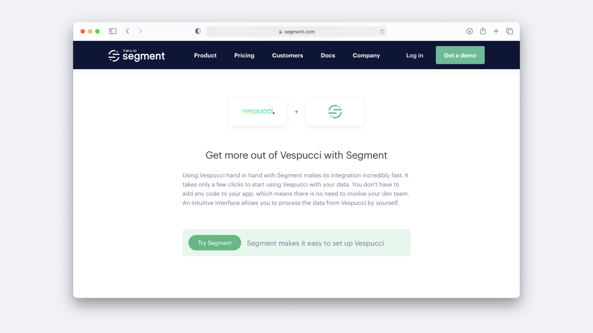We are pleased to introduce one of the most requested features: the integration of Vespucci with Segment. We worked hard to make this integration as seamless as possible. All Vespucci features — such as advanced visualization and segmentation tools — are now available both to our API users and to those opting for integration through Segment. The Segment integration offers a new range of opportunities. Our vision with Vespucci is to automate the findings of insights through advanced models and AI so that their quality no longer depends on the one who seeks them. This allows us to put analytics tools in the hands of more people within an organization. With our Segment integration, it’s simpler than ever for you to use Vespucci. It takes only a few clicks to start using Vespucci with your data. And you don't have to add anything to your application code, so there is no need to involve the dev team.
Segment integration is available today, from your dashboard and from the Segment Catalog.
About Vespucci: Vespucci is a new kind of analytics solution designed around statistics and AI. Most analytics tools ask you to specify what you’re looking for. That’s a problem, as you’re using analytics precisely because often you’re not sure what you’re looking for! That’s why we’ve designed Vespucci. Vespucci is an unsupervised analytics solution relying on models that highlight the elements and content in your app revealing remarkable behaviours.About Segment: Segment is a customer data platform that helps you collect, clean, and control your customer data. Using Segment, you can collect, unify, and connect your first-party to over 200 marketing, analytics, and data warehouse tools.
Introducing Vespucci 1.4.
Published on May 25, 2021
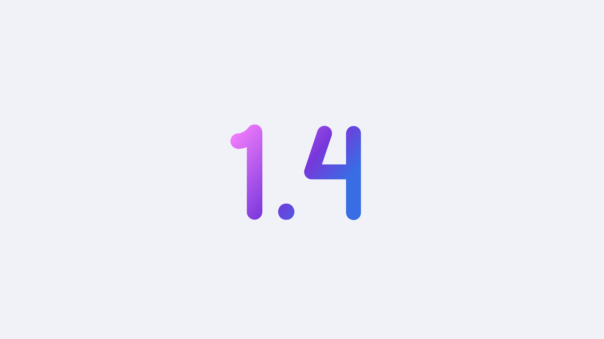New options for managing archived data.
Vespucci 1.4 introduces new synchronization options. Until now, it was not easy to re-import usage data from a past period into Vespucci. You had to log out, log back in and reconfigure Vespucci. Vespucci allows you to retrieve past data in a few clicks. Click on the new button in the menu bar to reveal a new configuration wizard that will allow you to retrieve your data in a few clicks.

A whole new onboarding experience.
Our vision with Vespucci is to make data analysis understandable to a whole new set of people. In this perspective the first contact with Vespucci is crucial. That's why we have completely rethought the onboarding experience. We have reduced the number of steps needed to configure Vespucci and we have introduced a new "tutorial" mode. This mode takes the form of a guided tour through which we present the key features of Vespucci.
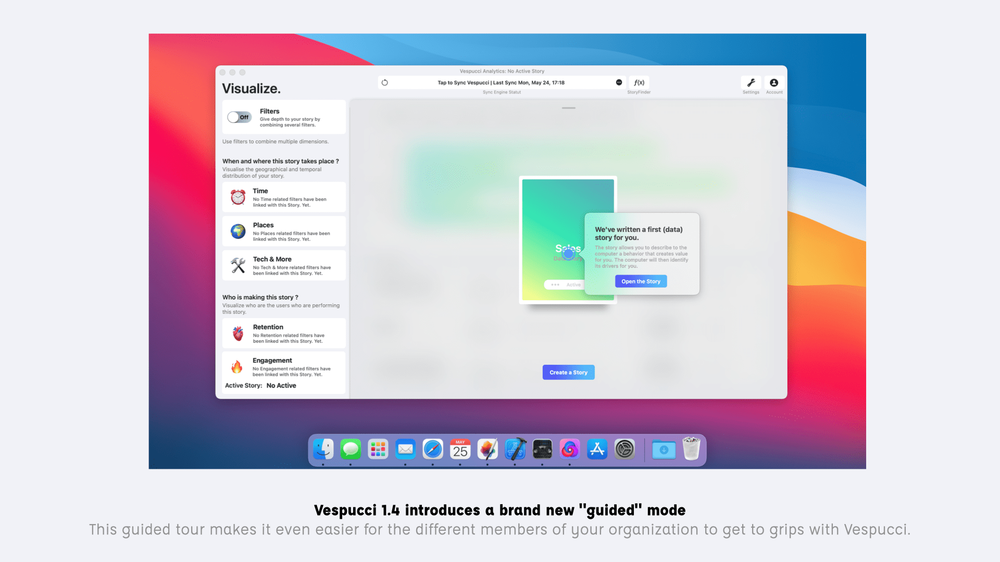An improved experience.
Vespucci 1.4 includes many general improvements. Thanks to a new system of compression of graphic elements, Vespucci occupies up to 35% less disk space, which makes its installation even faster. In addition, the management of textual variables and special characters in the French language has been improved.
Vespucci 1.4 will be available for all our users in the Vespucci preview program tomorrow.
An enhanced dashboard experience.
Published on May 17, 2021
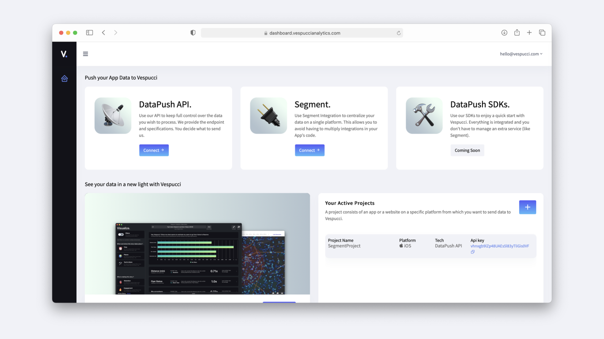We have compiled the main feedback we got on the handling and readability of the dashboard experience to propose a new and improved experience. The new dashboard offers a simplified handling through a revised design. The new dashboard experience is available today.
A new way to track data in Vespucci.
Published on May 7, 2021
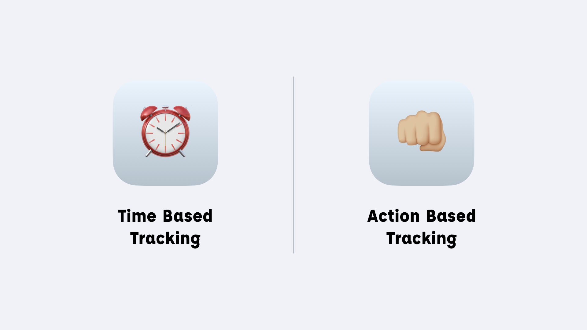Until now, Vespucci consolidated the usage data of your systems based on two particular actions: "Application Opened" and "Application Backgrounded". These actions are quite natural if we consider a mobile application based on a transactional model. Let's imagine an e-commerce app, the customer opens the app, consults some products, makes a purchase and finally closes the app. In such a case, the notion of session is quite straightforward and defining it on the basis of Opened and Backgrounded tracks makes a lot of sense. However, there are some apps for which the notion of Session is less direct, so defining them on the basis of these elements probably makes less sense. Finally, and this is probably the most important point, some digital experiences (a support conversation, the viewing of an advertisement) cannot be understood through a definition based on the supposed opening or closing of an app (since the product is potentially no longer an app). That's why we deploy today a new way to consolidate your sessions in Vespucci. An approach that no longer requires to define actions to track the opening or closing of the app.
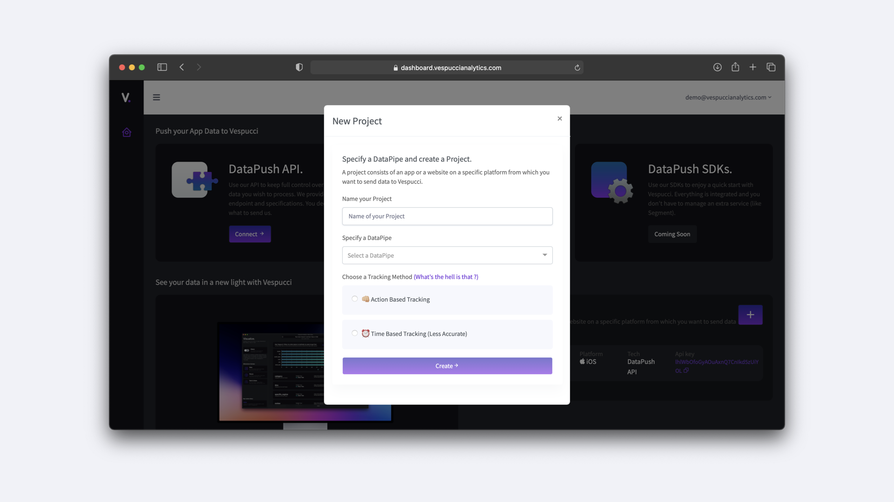
We call this new tracking method "Time Based Tracking". It consists in defining the session on the basis of a temporal criterion. Vespucci will analyze the timestamp of each of the DataLayers you are sending and try to consolidate them into concurrent events.
This approach is available today on your dashboard. To activate it, create a new project and specify "Time Based Tracking" in the new "Tracking Method" menu.
Introducing Vespucci 1.3, Data Science for Everyone.
Published on April 21, 2021
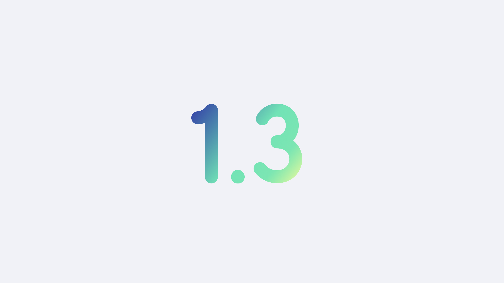We are very pleased to announce Vespucci 1.3. Vespucci 1.3 is part of our vision to industrialize analytics. Currently, data analysis is a craft process where the quality of the insights depends on the quality of the one who is looking for them. We want to change this by putting the computer in control. This opens new possibilities, as soon as you have a computer, you have your own data scientist. This allows us to put our tools in the hands of many new actors within an organization. To build up on this vision, we wanted to make Vespucci usable in new situations, with new types of data. We also wanted to reduce the friction between the data and the user by further refining the user interface to make it even more familiar or by reducing the wait during the initial preparation of the data.
This was our goal in designing Vespucci 1.3. Vespucci 1.3 introduces new ways to create value with your data and contains 1001 refinements to make the experience even more enjoyable for everyone. Here is an overview of some of the new features.
Introducing a new category of Data Story.
Until now, Vespucci had been designed around user journey. You had rich tools to trace transitions from one view to another in your app while Vespucci helped you isolate the drivers of such behaviours. However, this approach does not fit all product categories. Some experiences are not built around user journeys or flows but around key actions you want to track. These are, for example, users who perform actions on a given view such as adding an item to their favorites, entering a promotional coupon...
That's why we are introducing a new kind of story, based on actions. Getting started is very easy. You just have to describe, through a visual editor, the action you want to investigate and then, the Story Finder takes care of the rest and helps you to identify its drivers. We rely on AI and neural engine on compatible devices to help you write new kind of stories.
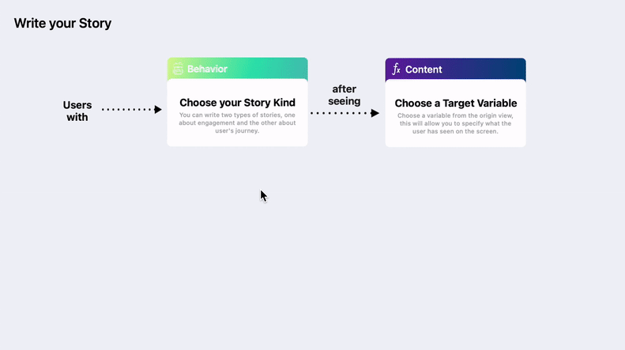
- 🛒 In an app or e-commerce website, find out what makes users still add an item to their cart despite reading a customer review with negative emotional content.
- ☎️ In a customer support platform, determine what drives your users to open a ticket through which they express their dissatisfaction.
- 🌮 In a meal delivery app, determine what drives your users to place an order despite a delivery time of over 45min.
A refined user interface.
A key element in our vision of bringing analytics to everyone in an organization is the user interface. It is the one that must give the data a familiar and welcoming character. Vespucci 1.3 introduces multiple improvements to the user interface that reflect the feedback from our early users. Thus the interface has been re-designed to make it more readable, especially in light mode, while we have completely redesigned the settings panel and improved the filter system. We hope you will love ❤️ this improved interface.
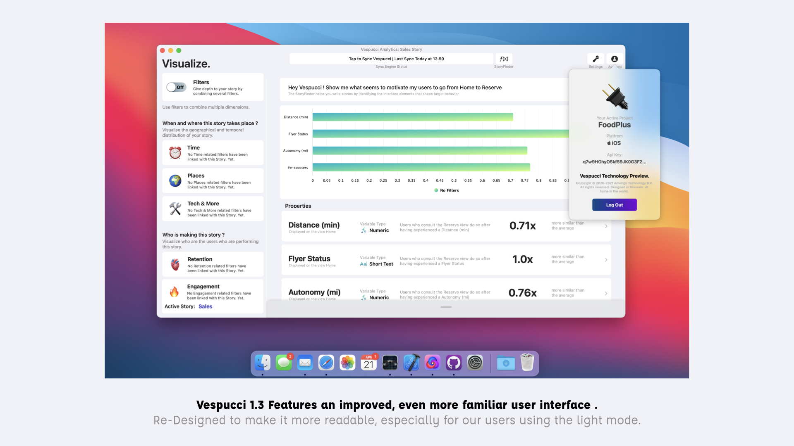A faster engine.
Nobody likes to wait. That's why we've rewritten our synchronization system to make it even faster. The processing of your data during the initial configuration of Vespucci is up to 4.5 times faster1.
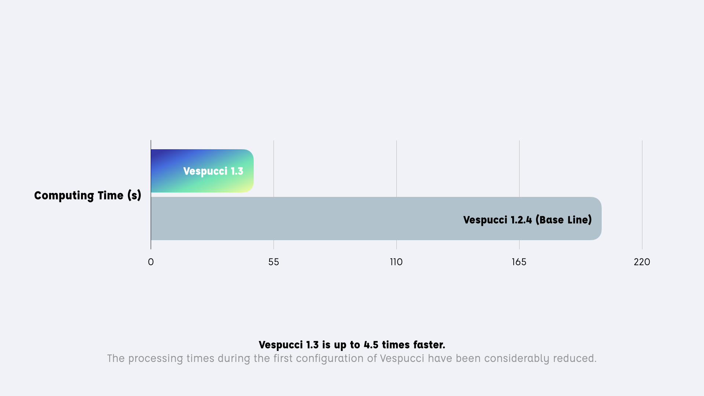Vespucci 1.3 will be available for download next week.
1Testing conducted using a 3.8GHz 8‑core 10th-generation Intel Core i7 based 27‑inch iMac system with 16GB of RAM using a pre-version of Vespucci 1.3 and Vespucci 1.2.4. Performance tests are conducted using specific computer systems and reflect the approximate performance of Vespucci.